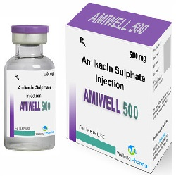

Amikacin ေဆးအေၾကာင္းသိေကာင္းစရာအျဖာျဖာ

Amikacin ဆိုတာဘာေဆးလဲ
- Amikinလို႔လည္းေခၚတဲ့ Amikacin ေဆးဟာ Bacteria ပိုးအမ်ိဳးမ်ိဳးကို ကုသမႈႏွင့္ကာကြယ္မႈတြင္ သံုးတဲ႔ေဆးျဖစ္တယ္။ Bacteria ပိုးပြားျခင္းကိုရပ္တန္႔ေပးတဲ႔ Aminoglycoside ပိုးသတ္ေဆးတစ္မ်ိဳးျဖစ္တယ္။ ထိုးေဆးအေနႏွင့္အဓိကသံုးတယ္။
Amikacin ေဆးကိုဘယ္ေရာဂါေတြမွာသံုးလဲ
- ဦးေႏွာက္အေျမႇးပါးေရာင္ျခင္း
- အဆုတ္ေရာင္ျခင္း
- ကိုယ္တြင္းဝမ္းေခါင္းပိုးျခင္း
- ဆီးလမ္းေၾကာင္းပိုးဝင္ျခင္း
- အရိုးအဆစ္မ်ား ပိုးဝင္ကိုက္ခဲျခင္း ႏွင့္
- ခႏၶာကိုယ္ေသြးဆိပ္တက္ျခင္း မ်ားမွာသံုးပါတယ္။
ေဆး၏ေဘးထြက္ဆိုးက်ိဳးဘာေတြရွိလဲ
- ပ်ိဳ႕အန္ျခင္း၊ ခံတြင္းပ်က္ျခင္း၊ ဗိုက္နာျခင္း၊ ေဆးထိုးေသာေနရာတစ္ဝိုက္တြင္ နီ၊ေရာင္၊နာျခင္းမ်ားျဖစ္တတ္ေသာ္လည္း လကၡဏပိုဆိုးလာလွ်င္ နီးစပ္ရာေဆးခန္းကိုသြားျပသင့္သည္။ ေျခ၊ လက္၊ ခႏၶာကိုယ္ထံုက်ဥ္ျခင္း၊ ၾကြက္သားအားနည္းျခင္း၊ တက္ျခင္းမ်ားျဖစ္ပါက စိုးရိမ္ရသည္။
- ရွားရွားပါးပါးအေနႏွင့္ ပိုးသတ္ေဆးသံုးစဥ္ ပိုးသတ္ေဆးအရွိန္ေၾကာင့္ ဝမ္းေလွ်ာတတ္သည္။ ဝမ္းေလွ်ာလွ်င္ဝမ္းပိတ္ေဆးေသာက္ပါက အႏၱရာယ္ရွိေသာေၾကာင့္ မသံုးရပါ။
- ဝမ္းအဆက္မျပတ္ၾကာၾကာသြားျခင္း၊ ဝမ္းထဲေသြးပါျခင္း၊ ခြ်ဲပါျခင္း၊ ဗိုက္အရမ္းနာျခင္းမ်ားျဖစ္လွ်င္ ဆရာဝန္ထံအျမန္သြားျပပါ။
- ပိုးသတ္ေဆးကိုၾကာရွည္စြဲသံုးလွ်င္ (ဒါမွမဟုတ္) ခဏခဏသံုးလွ်င္ ခႏၶာကိုယ္ထဲမွ နဂိုရွိေသာပိုးမ်ားပံုေျပာင္းၿပီး ပါးစပ္မွက္ခရုေပါက္ျခင္းႏွင့္ မိန္းမကိုယ္လမ္းေၾကာင္းပိုးဝင္ျခင္းမ်ားျဖစ္တတ္ပါသည္။
- အင္ပ်ဥ္ထျခင္း၊ ယားယံျခင္း၊ ေရာင္ရမ္းျခင္း၊ အသက္ရႈၾကပ္ျခင္းစသည့္ ဓာတ္မတည့္ေသာလကၡဏာေပၚလွ်င္ က်န္းမာေရးေစာင့္ေရွာက္မႈ အျမန္ခံယူသင့္ပါသည္။
ေဆးမသံုးခင္ဘာေတြသိထားရမလဲ
- Amikacin ေဆးႏွင့္ေဆးမတည့္ဖူးလွ်င္၊ Aminoglycoside ပိုးသတ္ေဆးမ်ား(gentamycin,tobramycin)ႏွင့္ ေဆးမတည့္ဖူးလွ်င္၊ အၾကားအာရံုျပႆနာ၊ ေက်ာက္ကပ္၊ ေသြးတြင္းရွိသင့္ေသာဓာတ္မ်ား(potassium,magnesium,calcium)ေလ်ာ့နည္းလွ်င္၊ ၾကြက္သားေပ်ာ့ေသာေရာဂါ၊ ပါကင္ဆန္ေရာဂါရွိလွ်င္ ဆရာဝန္ကိုႀကိဳေျပာထားရပါမယ္။
- ပိုးသတ္ေဆးသံုးခ်ိန္တြင္ ကာကြယ္ေဆးထိုးလွ်င္ ကာကြယ္ေဆးအာနိသင္မျပႏိုင္ပါ။
- ခြဲစတ္မႈျပဳလုပ္ရေတာ့မည္ဆိုလွ်င္ တာဝန္က်ဆရာဝန္အား မိမိ Amikacin ေဆးသံုးေနသည္ကို ႀကိဳအသိေပးပါ။
- ကိုယ္ဝန္ေဆာင္သည္မ်ားတြင္ သေႏၶသားအႏၱရာယ္ရွိႏိုင္ေသာေၾကာင့္ ဆရာဝန္ႏွင့္ေသခ်ာတိုင္ပင္ၿပီးမွ သံုးသင့္သည္။
- ႏုိ႔တိုက္မိခင္မ်ားတြင္ လိုအပ္လွ်င္ Amikacin ေဆးသံုးႏိုင္သည္။
ေဆးအစြမ္းဘယ္လိုေတြရွိလဲ
- Amikacinေဆးႏွင့္ အျခားေက်ာက္ကပ္ႏွင့္အၾကားအာရံုထိႏိုင္ေသာေဆးမ်ား(Amphotericin B, Cidofovir, Cisplatin, NSAIDs-ibuprofen)ႏွင့္ တြဲေသာက္မိလွ်င္ ေက်ာက္ကပ္ႏွင့္အၾကားအာရံု ဆိုးက်ိဳးပိုမ်ားႏိုင္သည္။
ေဆးေသာက္မ်ားသြားလွ်င္ဘာေတြျဖစ္မလဲ
- ျပင္းျပင္းထန္ထန္မူးေဝျခင္း၊ ပ်ိဳ႕အန္ျခင္း၊ ဗိုက္ေအာင့္ျခင္း၊ အသက္ရႈၾကပ္ျခင္းတို႔ ျဖစ္ႏိုင္ကာ အသက္အႏၱရာယ္စိုးရိမ္ရသည္။